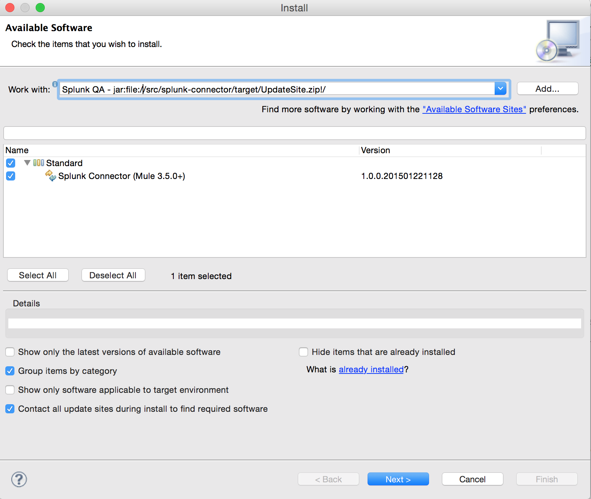
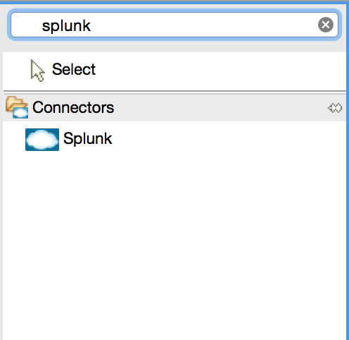
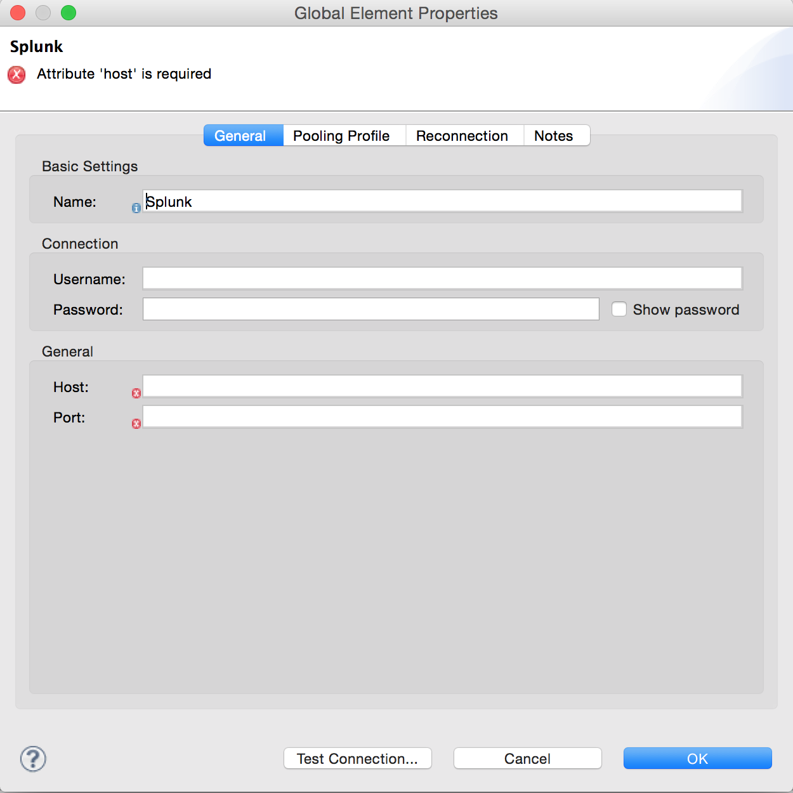
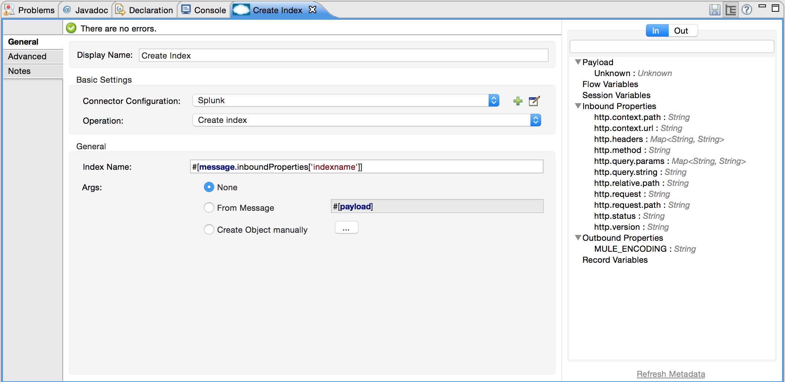
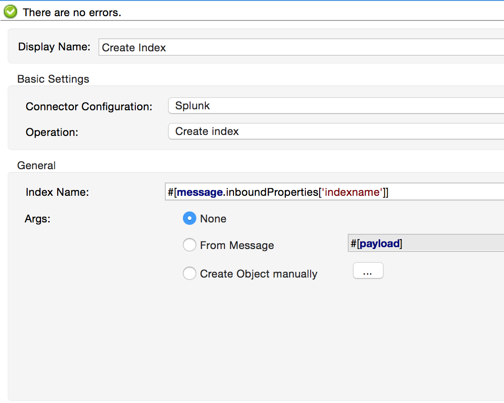

Splunk Connector v1.0.0
22 Jan 2015Premium Partner Connector
Make it easy to send data from your third party applications directly into the Splunk Index, and perform searches directly on the Splunk Enterprise Server from your system of choice.
Introduction
The Splunk Connector facilitates connections between Mule integration applications and Splunk Enterprise Server via its Java SDK. It is a Premium Connector, meaning that you can deploy it into production if you have an Mule Enterprise License or a CloudHub account, as well as a license to use the Connector from WhiteSky Labs, Pty Ltd.
The Splunk Connector provides access to 30 different APIs on Splunk Enterprise Server. It allows you to perform a large set of actions including creating, scheduling and running Searches, as well as managing indexes and sending data to the Splunk Server directly from Mule ESB.
Assumptions
This document assumes that you are familiar with Mule, Anypoint™ Connectors, and the Anypoint Studio interface. To increase your familiarity with Studio, consider completing one or more Anypoint Studio Tutorials. Further, this page assumes that you have a basic understanding of Mule flows and Mule Global Elements.
This document describes implementation examples within the context of Anypoint Studio, Mule ESB’s graphical user interface, and, in parallel, includes configuration details for doing the same in the XML Editor.
Requirements
There are no hardware, software or technical requirements in addition to those required to run the AnyPoint Platform.
You will require a valid CloudHub Subcription or Mule ESB Enterprise License in order to use the Connector, as well as a valid agreement with WhiteSky Labs to use the Splunk Connector.
Dependencies
The Splunk Connector requires AnyPoint Studio 4.1.1 or greater with Mule EE ESB Runtime 3.5.2 or newer.
Versions
The Connector was developed and tested using ESB 3.5.2 and AnyPoint Studio 4.1.1, using the Splunk SDK for Java version 1.3.0. The Connector supports Splunk Enterprise Server 6.2.
Consumers
The Connector requires Splunk Enterprise Server v6.2 or newer.
Compatibility Matrix
| Application/Service | Version |
|---|---|
| Mule Runtime | Mule 3.5.2 and above |
| Splunk Enterprise Server | v6.2 |
| Splunk SDK for Java | v1.3.0 |
Installing and Configuring
You can "test drive" the Splunk Connector by installing it in Anypoint Studio. Follow the instructions to download and launch Anypoint Studio, then follow the steps below to install the Splunk Connector.
However, to use the Splunk Connector in a production environment, you must have either:
- an Enterprise license to use Mule
- a CloudHub Starter, Professional, or Enterprise account
- Contact the MuleSoft Sales Team to obtain either of these.
Installing
To install the Splunk Connector:
- Under the Help menu in Anypoint Studio, select Install New Software.
- Next to the Work with: field of the Install wizard, choose the "Add:" button. Choose "Archive" and navigate to the installation zip file provided to you by WhiteSky Labs. Finally, give the site a name (e.g. "Splunk Connector Installer") and choose OK.
In the table below the Filter field (see image below), click to expand the Standard folder, then select Mule Splunk Connector. Click Next.

Review the details, then click Next.
Click to accept the terms and conditions, then click Finish.
Click Restart Now to complete the installation. Once you have installed the connector and restarted Studio you will see several the Splunk Connector available in the palette, under the Connectors category.

Configuring
To use the Splunk Connector, you must configure two things:
- an instance of the connector in your application
- a global Splunk connector configuration
To create a global Splunk connector configuration, follow these steps:
- Click the Global Elements tab at the base of the canvas, then click Create.
- Use the filter to locate, then select, Splunk, then click OK.
Configure the global connector's parameters according to the table below.

Parameter Description Example Name Name for the global element Splunk Username Username for connecting to Splunk Enterprise admin Password Password for connecting to Splunk Enterprise changeme Host The hostname of the Splunk Enterprise Server localhost Port The administration port (not the web port) of the Splunk Enterprise Server 8089 Access the Pooling Profile tab to configure any settings relevant to managing multiple connections via a connection pool.
Access the Reconnection tab to configure any settings relevant to reconnection strategies that Mule should execute if it loses its connection to Splunk.
Click Test Connection to confirm that the parameters of your global Splunk connector are accurate, and that Mule is able to successfully connect to your instance of Splunk.
Click OK to save the global connector configurations.
Return to the Message Flow tab in Studio. Drag the Splunk Connector onto the canvas, then select it to open the Properties Editor console.
Configure the connector's parameters according to the table below.

Field Description Default Display Name A human-readable name for the Connector operation Splunk Connector Config Reference The global configuration for the Connector to connect to Splunk Enterprise Server Splunk Operation The operation to perform. Create Index Index Name A parameter for the operation chosen. #[payload] Click blank space on the canvas to save your Splunk connector configurations.
Example Use Case
It's time to build the flows which creates an Index, sends some data to the index via HTTP, and removes the index.


Create Index flow: This is the flow which creates an index on the Splunk Server. Start by dragging an HTTP endpoint from the palette onto the flow. Configure the Host, Port and Path to "localhost", "8081", and "createindex", respectively. This is the URL you will call to start the flow. Then drag a Splunk Connector onto the flow after the HTTP endpoint. In the configuration window for the Splunk Connector, select the previously created Splunk config from the Config Reference dropdown. Set the Operation to "Create Index", and set the Index Name to ""#[message.inboundProperties['indexname']]". Click okay.

This completes the Create Index flow.
Send Data flow: This is the flow which sends data to the index. Start by dragging an HTTP endpoint from the palette onto the workspace (not onto a flow), creating a new flow. Configure the Host, Port, and Path to "localhost", "8081", and "adddata", respectively. This is the URL you will call to start the flow. Then drag a Splunk Connector onto the flow after the HTTP endpoint. In the configuration window for the Splunk Connector, select the previously created Splunk config from the Config Reference dropdown. Set the Operation to "Add data to Index", and set the Index Name field to "#[message.inboundProperties['indexname']]". Set the "String Data" field to "#[message.inboundProperties['stringdata']]". Click OK.

Remove Index flow: This is the flow which removes the index you created. Start by dragging an HTTP endpoint from the palette onto the workspace (not onto a flow), creating a new flow. Configure the Host, Port, and Path to "localhost", "8081", and "removeindex", respectively. This is the URL you will call to start the flow. Then drag a Splunk Connector onto the flow after the HTTP endpoint. In the configuration window for the Splunk Connector, select the previously created Splunk config from the Config Reference dropdown. Set the Operation to "Remove Index", and set the Index Name field to "#[message.inboundProperties['indexname']]". Click OK.

Flow XML
The final flow XML should look like this.
<?xml version="1.0" encoding="UTF-8"?>
<mule xmlns:http="http://www.mulesoft.org/schema/mule/http" xmlns:splunk="http://www.mulesoft.org/schema/mule/splunk" xmlns:tracking="http://www.mulesoft.org/schema/mule/ee/tracking" xmlns="http://www.mulesoft.org/schema/mule/core" xmlns:doc="http://www.mulesoft.org/schema/mule/documentation"
xmlns:spring="http://www.springframework.org/schema/beans" version="EE-3.5.2"
xmlns:xsi="http://www.w3.org/2001/XMLSchema-instance"
xsi:schemaLocation="http://www.springframework.org/schema/beans http://www.springframework.org/schema/beans/spring-beans-current.xsd
http://www.mulesoft.org/schema/mule/core http://www.mulesoft.org/schema/mule/core/current/mule.xsd
http://www.mulesoft.org/schema/mule/http http://www.mulesoft.org/schema/mule/http/current/mule-http.xsd
http://www.mulesoft.org/schema/mule/splunk http://www.mulesoft.org/schema/mule/splunk/current/mule-splunk.xsd
http://www.mulesoft.org/schema/mule/ee/tracking http://www.mulesoft.org/schema/mule/ee/tracking/current/mule-tracking-ee.xsd">
<splunk:config name="Splunk" username="#{splunk.username}" password="#{splunk.password}" host="#{splunk.host}" port="#{splunk.port}" doc:name="Splunk"/>
<flow name="Create_Index_Flow" doc:name="Create_Index_Flow">
<http:inbound-endpoint exchange-pattern="request-response" host="localhost" port="8081" path="createindex" doc:name="HTTP"/>
<splunk:create-index config-ref="Splunk" indexName="#[message.inboundProperties['indexname']]" doc:name="Create Index"/>
</flow>
<flow name="Add_Data_To_Index_Flow" doc:name="Add_Data_To_Index_Flow">
<http:inbound-endpoint exchange-pattern="request-response" host="localhost" port="8081" path="adddata" doc:name="HTTP"/>
<splunk:add-data-to-index config-ref="Splunk" indexName="#[message.inboundProperties['indexname']]" stringData="#[message.inboundProperties['stringdata']]" doc:name="Add Data To Index"/>
</flow>
<flow name="Remove_Index_Flow" doc:name="Remove_Index_Flow">
<http:inbound-endpoint exchange-pattern="request-response" host="localhost" port="8081" path="removeindex" doc:name="HTTP"/>
<splunk:remove-index config-ref="Splunk" indexName="#[message.inboundProperties['indexname']]" doc:name="Remove Index"/>
</flow>
</mule>
Testing the app
Now it's time to test the app. Run the app in Anypoint Studio and open a browser window. Visit http://localhost:8081/createindex?indexname=demoindex. This will create an index on the Splunk server. Now visit http://localhost:8081/adddata?indexname=demoindex&stringdata=testing. This will send data to the index (you can verify this in the Splunk Search App). Now visit http://localhost:8081/removeindex?indexname=demoindex. This will remove the previously created index.
Updating From an Older Version
There is currently no procedure for upgrading as only one version of the Connector exists.
Using This Connector
Best Practices
- It is important to understand how the internal Splunk Architecture works in order to effectively use the Connector, especially the relationships between indexes, searches, inputs and data. Review the Splunk Enterprise documentation to learn more.
- Be careful of using Real-time and Export Searches. They will run permanently until completed (Export) or terminated (Real-time). This can cause unexpected load on your Mule ESB server and should be used with caution. Saved Searches should be preferred as a general rule.
Go Further
- Splunk SDK for Java Documentation
- API Documentation is available at http://whitesky-labs.github.io/splunk-connector/apidocs
- Read more about http://www.mulesoft.org/documentation/display/current/Anypoint+Connectors